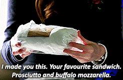

The FitzSimmons Sandwich
Prosciutto and buffalo mozzarella sandwich, with just a hint of homemade pesto aioli

Description
Marvel's Agents of S.H.I.E.L.D. has been the first TV series set in the Marvel Cinematic Universe and probably one of the most underrated TV series of all time (am I overreacting? I don't think so. Have you watched it?).
Leopold Fitz and Jemma Simmons, scientists and — you guessed it! — agents of S.H.I.E.L.D., are adorable characters, and she famously made his favourite sandwich as a way to let him know how much she cared for him.
Anyway. For the Fitz in your life, going on dangerous missions or not, here's the recipe to tell them "I love you"!

Ingredients
For the Pesto Aioli:
- 2 egg yolks
- Juice from 1/2 a lemon
- 2/3 cup olive oil
- 1/3 cup pesto
For the Sandwich:
- 1 Baguette style bread loaf, sliced lengthways
- 1/2 lb (225g) of buffalo mozzarella sliced
- 1/2 lb (225g) prosciutto sliced thin
- Fresh Basil leaves
- Pesto Aioli — just a hint
Steps
For the Pesto Aioli:
- In a food processor combine egg yolks, lemon juice and pesto until well mixed
- With the food processor still running, pour in the olive oil in a slow and steady stream until the mix is fully emulsified
- Transfer aioli to an air tight container and refrigerate for up to 2 weeks
For the Sandwich:
- Spread “just a hint” of the pesto aioli on bottom inside of the bread
- Layer with prosciutto, mozzarella, fresh basil, top with other half of bread
Original recipe and sandwich photo from Fan Girls Cook